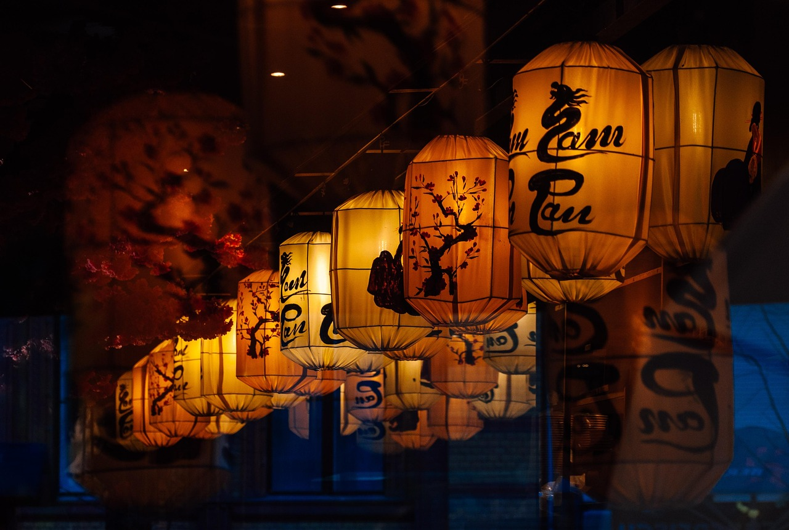
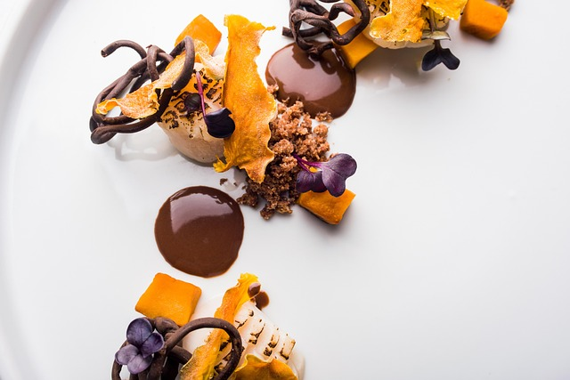
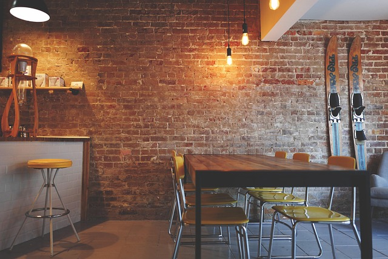
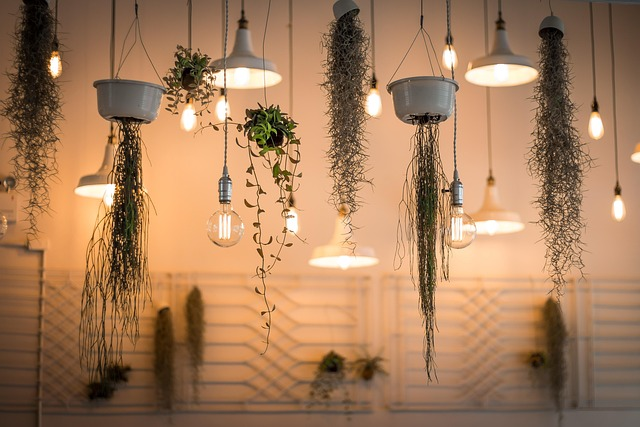
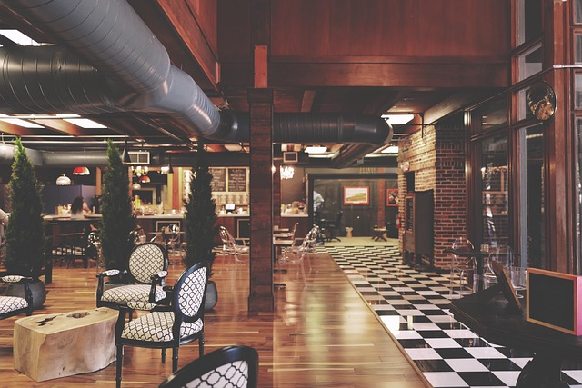
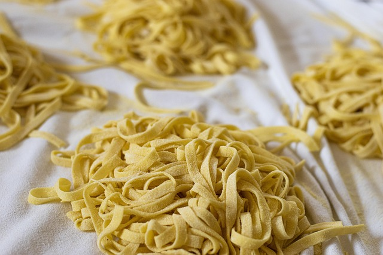
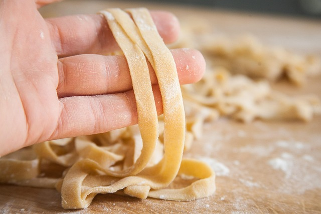
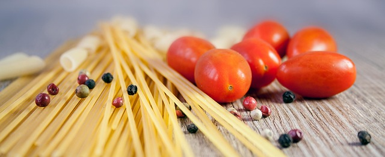

Ristorante · La Spezia
A tavola, sopra Santa Lucia
Cucina italiana a La Spezia, in Via Costa di Santa Lucia. Luci soffuse, mattoni, piatti da dividere con calma.

Il locale
Atmosfere e sapori
Cucina italiana
Sapori riconoscibili, da condividere con chi si ama. Il menu si scopre contattando direttamente il ristorante.
Atmosfera raccolta
Luce calda, materiali rustici e un ambiente pensato per fermarsi a chiacchierare senza fretta.

A La Spezia
In Via Costa di Santa Lucia 9, per una pausa lontana dal ritmo frenetico del centro.

Il locale
Una cena che sa di casa
Si sale in Via Costa di Santa Lucia e la giornata rallenta. Qui la tavola è il centro: si siede, si parla, si passa il pane.
Cucina italiana, pensata per stare insieme. Per sapere cosa c'è in tavola oggi, basta chiedere direttamente a chi cucina.
Galleria
Atmosfere e sapori
Immagini illustrative: luci, tavole e pasta, per immaginare una serata conviviale.






Come iniziare
Come venirci a trovare
Fai un colpo di telefono
Contatta il ristorante per informazioni su orari, disponibilità e menu.
Scegli il momento
Concorda con calma giorno e orario più adatti a te e ai tuoi ospiti.
Vieni a tavola
Raggiungi Via Costa di Santa Lucia 9 e lasciati portare dalla serata.
Domande
Prima di venire
Dove si trova il ristorante?
Posso prenotare un tavolo?
Quali piatti propone la cucina?
Un tavolo ti aspetta
Scrivi o chiama per scoprire orari, menu e disponibilità. Il resto è questione di appetito.
Contatti
Come trovarci
La SpeziaApri su Google Maps